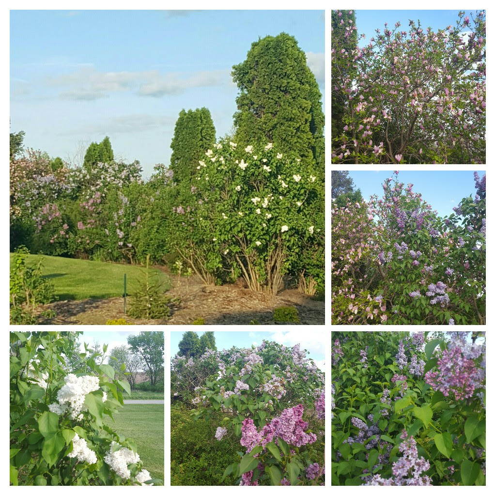
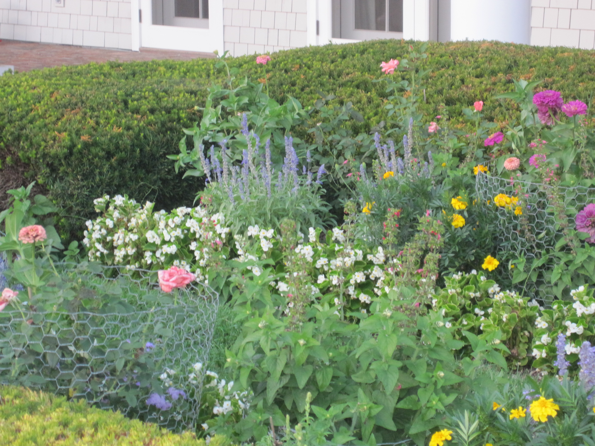
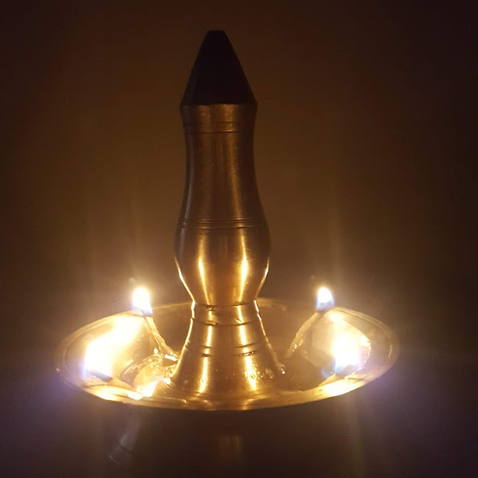

Who I Am
After decades as a consultant across multiple industries — working with organizations on technology, operations, and process — I chose to step back, breathe, and live more deliberately. That journey brought me to Fairfield, Iowa.
Fairfield is no ordinary small town. It is home to one of the most vibrant communities of meditators in the world, drawn together by a shared commitment to consciousness, creativity, and connection. I found my people here.
These days my life is shaped by morning meditation, tending six acres of land, advocacy work with PFLAG Mount Pleasant, and creative projects — including my YouTube channel, The Lamp at the Door, where I write, produce, and narrate short videos exploring inner growth and spirituality. I also keep learning — taking workshops and courses that continue to expand my understanding.
Decades of consulting across technology, operations, and process improvement in retail, healthcare, eCommerce, and more.
Fairfield, Iowa — a thriving community of meditators, entrepreneurs, and artists nestled in the heartland.
Retired and grateful — meditating daily, stewarding the land, and creating content that (hopefully) uplifts.
Communications Director and past VP at PFLAG Mount Pleasant — teaching workshops, MCtng TapestryFest, and advocating for LGBTQ+ families.
What I Love
Transcendental Meditation has been a cornerstone of my life for years. There is something profound about twice-daily practice — the way it settles the mind, opens the heart, and makes everything else a little clearer. Fairfield's collective meditation energy is unlike anywhere else on earth.
Sitting in stillness is not doing nothing. It's the most important thing I do each day.
The land — all six acres of it — is becoming more and more a part of me, and me of it, with each day and each season. I love seeing the trees and shrubs thrive, and the animals that thrive with them.
It is both gardening and landscaping, tending what grows close to the ground and watching what reaches toward the sky. There is a quiet satisfaction in this work that goes deeper than words.


Advocacy & Service
PFLAG Mount Pleasant is a chapter of PFLAG — the nation's first and largest organization dedicated to supporting, educating, and advocating for LGBTQ+ people and their families.
I have been deeply involved with the Mount Pleasant chapter for years, serving as Vice President and now as Communications Director. I also have the privilege of serving as MC for TapestryFest, the chapter's annual celebration of community and belonging.
Through PFLAG I lead small workshops — one of the ways I find meaning in sharing what I've learned while continuing to grow alongside everyone in the room.
Creative Work
Through deep conversations with fellow seekers, Transcendental Meditation, and years of exploring the truths found across many traditions, I have come to believe that a truly fulfilling life is within reach for all of us. This channel is where those reflections take shape — narrated videos on self-discovery, inner growth, spirituality, and personal development.

A channel exploring the journey of self-discovery and inner growth — weaving together meditation, spirituality, and wisdom from many traditions. Short narrated reflections on what it means to live a truly fulfilling life.
Say Hello
Whether you want to talk about meditation, swap notes on trees and gardens, learn more about PFLAG, or just reach out — I'd love to hear from you.